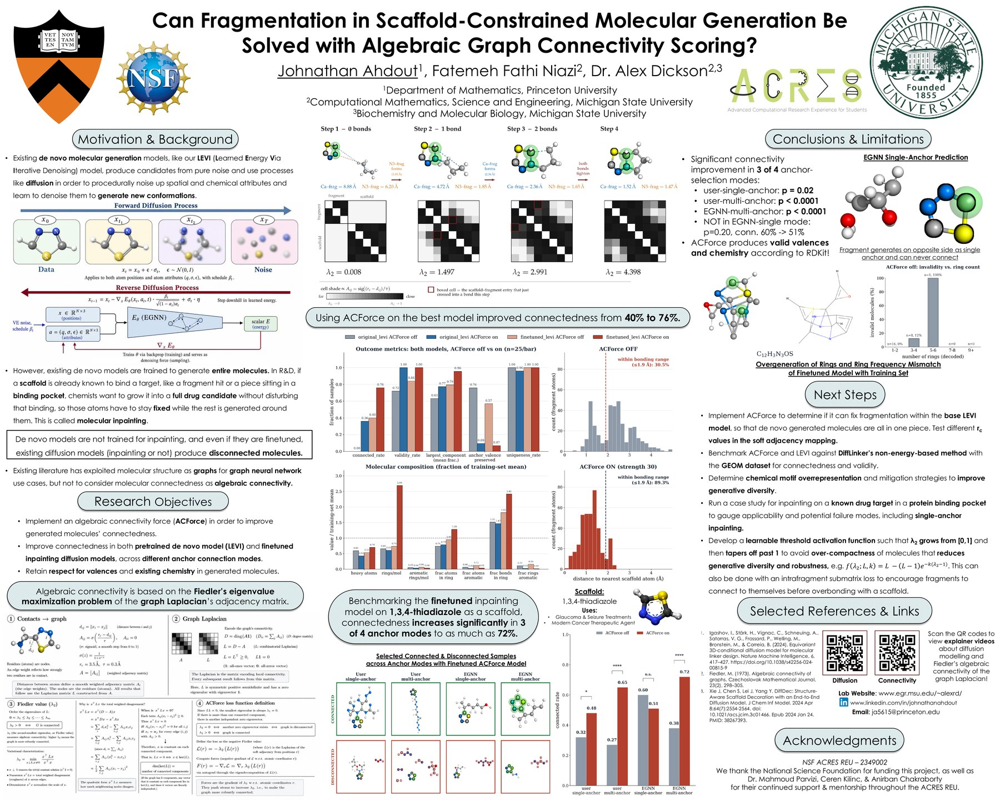

SE(3)-Equivariant Diffusion Models for Structure-Based Molecular Generation 1st Place, ACRES Symposium Ongoing
Extended the LEVI molecular generation framework in PyTorch, coupling SE(3)-equivariant graph neural networks with diffusion-model methods to generate chemically valid drug candidates inside protein binding pockets. Developed ACForce, a graph-connectivity objective based on Laplacian graph theory and Fiedler-score connectivity, increasing molecular connectivity by over 30% (nearly 50% on benchmark drug-like molecule datasets) while preserving molecular quality. Selected as 1 of 10 students from 200+ applicants nationally.
I'm still actively working on this project: writing up the results as papers and extending ACForce with effective resistance and network flow ideas from graph theory. Both papers are currently in preparation: a proof-based diffusion paper (target: JCIM) where I'm first-author, and a manuscript targeting NeurIPS / ICLR where I'm second-author.